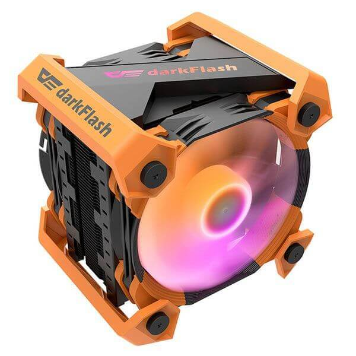

<html>
  <head>
  <meta charset="utf-8">
<link href="http://cdn.bootcss.com/slick-carousel/1.6.0/slick.min.css" rel="stylesheet">
<link href="http://cdn.bootcss.com/slick-carousel/1.6.0/slick-theme.min.css" rel="stylesheet">
<style type="text/css">
  .your-class, .your-class img {
    width: 480px;
    height: 400px;
    margin: 0 auto;
    vertical-align: middle;
  }

  .slick-arrow::before {
    color: red;
  }
 
  img {
    width: 480px;
    height: 400px;
    margin: 0 auto;
    vertical-align: middle;
  }
  .small-pic {
    position: absolute;
    top: 0;
    right: 0;
    display: flex;
    align-items: center;
    width: 135px;
    height: 100%;
    padding: 25px 0;
}
</style>
  </head>
  <body style="margin: 0 auto; width: 600px; position: relative;">

<!-- <div class="your-class">
    <div></div>
    <div> </div>
    <div> </div>
    <div> </div>
</div> -->

<div class="small-pic multi slick-initialized slick-slider slick-vertical">
    <button type="button" class="slick-prev slick-arrow" style="" tabindex="0"></button>
    <div class="slick-list draggable" style="height: 540px;">
        <div class="slick-track" style="opacity: 1; height: 2160px; transform: translate3d(0px, -540px, 0px);">
            <div class="slick-slide slick-cloned" data-slick-index="-4" aria-hidden="true" tabindex="-1" style="width: 135px;">
                <div>
                    
                </div>
            </div>
            <div class="slick-slide slick-cloned" data-slick-index="-3" aria-hidden="true" tabindex="-1" style="width: 135px;">
                <div>
                    
                </div>
            </div>
            <div class="slick-slide slick-cloned" data-slick-index="-2" aria-hidden="true" tabindex="-1" style="width: 135px;">
                <div>
                    
                </div>
            </div>
            <div class="slick-slide slick-cloned" data-slick-index="-1" aria-hidden="true" tabindex="-1" style="width: 135px;">
                <div>
                    
                </div>
            </div>
            <div class="slick-slide slick-current slick-active" data-slick-index="0" aria-hidden="false" style="width: 135px;">
                <div>
                    
                </div>
            </div>
            <div class="slick-slide slick-active" data-slick-index="1" aria-hidden="false" style="width: 135px;">
                <div>
                    
                  </div>
                </div>
                <div class="slick-slide slick-active" data-slick-index="2" aria-hidden="false" style="width: 135px;">
                  <div>
                    
                  </div>
                </div>
                <div class="slick-slide slick-active" data-slick-index="3" aria-hidden="false" style="width: 135px;">
                  <div>
                    
                  </div>
                </div>
                <div class="slick-slide" data-slick-index="4" aria-hidden="true" style="width: 135px;" tabindex="-1">
                  <div>
                    
                  </div>
                </div>
                <div class="slick-slide" data-slick-index="5" aria-hidden="true" style="width: 135px;" tabindex="-1">
                  <div>
                    
                  </div>
                </div>
                <div class="slick-slide slick-cloned" data-slick-index="6" aria-hidden="true" tabindex="-1" style="width: 135px;">
                  <div>
                    
                  </div>
                </div>
                <div class="slick-slide slick-cloned" data-slick-index="7" aria-hidden="true" tabindex="-1" style="width: 135px;">
                  <div>
                    
                  </div>
                </div>
                <div class="slick-slide slick-cloned" data-slick-index="8" aria-hidden="true" tabindex="-1" style="width: 135px;">
                  <div>
                    
                  </div>
                </div>
                <div class="slick-slide slick-cloned" data-slick-index="9" aria-hidden="true" tabindex="-1" style="width: 135px;">
                  <div>
                    
                  </div>
                </div>
                <div class="slick-slide slick-cloned" data-slick-index="10" aria-hidden="true" tabindex="-1" style="width: 135px;">
                  <div>
                    
                  </div>
                </div>
                <div class="slick-slide slick-cloned" data-slick-index="11" aria-hidden="true" tabindex="-1" style="width: 135px;">
                  <div>
                    
                  </div>
                </div>
              </div>
            </div>
            <button type="button" class="slick-next slick-arrow" style="" tabindex="0"></button>
          </div>
        </div>
      </div>
    


<script type="text/javascript" src="//code.jquery.com/jquery-1.11.1.min.js"></script>
<script src="http://cdn.bootcss.com/slick-carousel/1.6.0/slick.min.js"></script>

<script type="text/javascript">
  $(document).ready(function(){
    $('.small-pic').slick({
    //   dots: true,
    //   infinite: true,
    //   speed: 300,
    //   slidesToShow: 1,
    //   adaptiveHeight: true
    dots: false,

infinite: true,

autoplay: false,

arrows: true,

fade: true,

speed: 150,

slidesToShow: 1,

slidesToScroll: 1,

draggable: false,

swipe: false,
vertical: true

    });
  });
</script>

  </body>
</html>